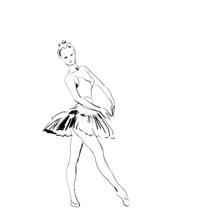

Галина Сергеевна Уланова
советская артистка балета, балетмейстер и педагог

вид сценического искусства, основными выразительными средствами которого являются неразрывно связанные между собой музыка и танец.
Балет появился в 16 веке в Италии. В то время он считался танцевальным дополнением к опере. Позже, уже во Франции, балет становится пышным, возвышенным придворным действом.
В 17 веке Людовик 14-й стал основателем первой балетной школы - Королевской Академии танца. Руководителем школы стал композитор Люлли, который определил развитие балета на следующее столетие.
Также в 17 веке балет пополняется новыми жанрами: балет-опера, балет-комедия, закладываются основы балетного искусства: единство музыки, танца и драматургии.
Начиная с 1681 года, участие в балетных спектаклях становится доступным и для женщин. Отдельным видом искусства балет становится лишь во второй половине 18-го века благодаря французскому балетмейстеру Жану Жоржу Новерру.
Первый спектакль в России состоялся в 1673 году при дворе царя Александра Михайловича. Французский балетмейстер Шарль-Луи Дидло утверждает приоритет женской партии в танце, увеличивает роль кордебалета, усиливает связь между танцем и пантомимой. Настоящую революцию в балетной музыке произвел П.И. Чайковский в своих трех балетах: «Щелкунчик», «Лебединое озеро» и «Спящая красавица».
В 1783 году Екатерина Вторая создает Императорский Театр Оперы и Балета в Санкт-Петербурге и Большой Каменный театр в Москве. На сценах знаменитых театров прославили русский балет такие мастера как М. Петипа, А. Павлова, М. Данилова, М. Плисецкая, В. Васильев, Г. Уланова и многие другие.
20-й век ознаменовался новаторством в литературе, музыке и танце. В балете это новаторство проявилось в создании танца модерн – пластического танца, свободного от техники классической хореографии. Одним из основателей балета модерн была Айседора Дункан.
советская артистка балета, балетмейстер и педагог
актриса, прима-балерина Большого театра СССР
русская балерина Американского театра балета
балерина, общественный деятель и артистка
балерина и лауреат Государственной премии
Воспитанницы коллектива не враждуют между собой, регулярно посещают занятия и полностью выкладывают свои силы. Каждая прошедшая тренировка оставляет за собой приятную усталость, которая вдохновляет стараться все больше и больше с каждым разом.
Коллектив классического танца «Фиеста» основан в 2013 г. Руководитель коллектива - Фролова Наталья. Хореограф-постановщик - Фролова Екатерина, выпускница Санкт-Петербургского института культуры и искусства.

Воспитанницы принимают участие в мастер-классах у педагогов: заслуженной артистки Румянцевой Ирины Ивановны, солиста балета Мариинского театра, лауреата премии "Золотая Маска", Иванова Андрея Валентиновича, артистки балета Астраханского театра Самойловой Александры.
Наши достижения
Коллектив постоянный участник городских и областных мероприятий, в числе которых «Праздник танца», «Солнечный эльф», областных конкурсов юных чтецов имени Константина Бальмонта, регионального фестиваля молодежных театров моды «Мир молодых», День города и др. Обладатель Гран-При Чемпионата и Первенства Ивановской области по современным танцевальным направлениям "Ситцевый бал", Кубка Всемирной танцевальной Олимпиады.
Лауреаты областных, региональных, международных конкурсов: «Танцетворение», «Соловушкино раздолье», "Ситцевый бал", "Проспект-NN", «Планета танца», «Жар-птица», «Магия танца», «Шире круг» и многих других.
Концерты проходят с большим успехом и на высоком профессиональном уровне.
© 2018. Год российского балета balletru.2018@gmail.com
Ольга Бекетова
Миф №1
В балет приводят родители, обрекая на несчастную жизнь
Многим кажется, что люди попадают в балет из-за жестоких родителей, а карьера танцора после тридцати окончена. Но это не так. В балет и вправду приходят рано, но обучение начинается с 10 лет. Профессиональный балет - с 18 лет, а средний возраст танцующих - 27 лет. Практика показывает, что ни один из артистов не пожалел от выбора профессии. Большинство артистов совмещает работу с обучением, что позволяет в будущем продолжать работать.
Миф №2
У танцоров балета в голове только их работа
На самом деле многие артисты - вполне разносторонние и интересные люди. К примеру, в «Русском балете» были танцовщики, которые умудрялись параллельно с работой в театре еще и очно учиться на физико-математическом факультете. Подчиненность профессии случается, но все чаще артисты понимают, что зацикливаться на работе не стоит, а надо пробовать себя и в чем-то другом. Они общаются друг с другом, ходят в кино, заводят семьи.
Миф №3
Все балерины сидят на диете
Артисты порой тоже много едят, но из-за больших нагрузок калории не успевают задерживаться в организме. Средний вес - чуть больше 40 килограмм. Объяснение простое - партнеру будет тяжело поднимать и подбрасывать лебедя, чей вес превышает полцентнера. Да и современные балерины могут себе позволить не соблюдать диету еще хотя бы потому, что склонных к полноте отсеивают еще во время обучения.
Миф №4
В балете царит постоянная вражда
На самом деле нельзя говорить, что во всех театрах царит такая обстановка. Очевидцы говорят, что в «Русском балете» присутствует доброжелательное отношение артистов друг к другу, вне зависимости от занимаемого положения или статуса. А сплетни и зависть - обычные человеческие качества. Они встречаются в любом коллективе.
Миф №5
Балет не популярен среди молодежи
О непопулярности этого вида искусства говорить не стоит. А молодежь действительно ходит на балет реже, чем представители старшего поколения. Причина тут в том числе и финансовая - регулярное посещение представлений вещь недешевая.
Миф №6
В новых пуантах можно сразу танцевать
Каждая балерина индивидуальна как и ее стопа. Поэтому к выбору пуант они относятся очень внимательно. После покупки танцевать в туфельках еще нельзя. Балерины "разбивают" их настоящим молотком, чтобы те плотно и комфортно сидели на ноге.